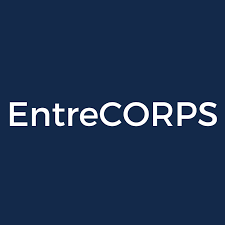

Hey there! 👋
My name is Albert and I am a 4th year Information Systems and Finance Major at the University of Illinois at Urbana-Champaign. My passion centers around product management, and combined with my experiences in consulting, technical program management, and product management, I am looking to impact change in the tech world.
I am currently a Technical Program Manager Intern at Tesla, driving execution for the Semi Truck team with a focus on chassis development and the body-in-white stamp shop. I manage program timelines, lead cross-functional syncs, and ensure critical path deliverables stay on track. Everyday I leverage tools like Excel, SQL, Power BI, Jira, and CATIA 3DX to bring data-driven clarity to complex manufacturing challenges. I've also had the surreal hands-on experience of building a full frame of the Semi Truck myself! I enjoy breaking the barriers between people and technology - combining my technical knowledge with my creative mind and keen eye for design to create impactful products. My goal is to always deliver products that are scalable and efficient under the hood while providing engaging, pixel-perfect user experiences.
When I'm not in front of a computer screen, I'm probably playing volleyball, cruising around on my electric longboard, or crossing off another item on my bucket list.
Business Intelligence Skills
Other Technical Skills
UX Design - Figma, Miro, Canva
Project - Jira, Confluence, Asana
CAD - CATIA 3DX, Blender, AutoCAD
Product - Testing, Roadmaps, Requirements
Adobe Premiere Pro & After Effects

University of Illinois Urbana-Champaign
August 2021 - December 2025
Senior in Information Systems and Finance
Relevant Coursework:
• BADM 329: New Product Development
• BADM 352: Database Design and Management (SQL)
• BADM 374: Management Decision Models (Solver, Linear Programming, Dynamic Programming)
• BADM 379: Process Improvement (Six Sigma, Lean)
• BADM 449: Business Strategy
• BADM 453: Business Intelligence (Python, R)
• FIN 418: Financial Modeling (Excel)
• FIN 463: Investment Banking
Extracurriculars:
• Illini World Taekwondo Demo Team
• FVE Volleyball Club Team
• BobaTalks Product Manager Career Mentor
Tesla
January 2025 - Present
Technical Program Manager Intern ⛟
At Tesla, I led the beta launch of Tesla’s next-generation Semi Truck by taking ownership of the full product development process for the chassis and body-in-white systems! I worked hands-on with 3DExperience to design, test, and validate 3D models while using FMEA testing to make sure our designs could scale in production. A big part of my role was working directly with engineers on the ground – bridging the gap between what was designed on paper and what could actually be built on the assembly line. To keep everything moving fast and on track, I built custom tracking systems using Jira, SQL, Java, Excel, and Power BI, helping the team resolve issues quicker and stay aligned across design, process, and quality engineers. I was able to make a real impact in turning the Semi vision into reality and making sure every part of the truck was built with speed, precision, and innovation!
Skills Implemented:
• SQL
• Java
• Power BI
• CATIA 3DExperience
• Jira
• Confluence
• Microsoft Excel
• ThinkCell
Amazon
May 2024 - August 2024
Technical Program Manager Intern 🤖
At Amazon, I focused on driving process standardization across global teams and emerging markets, helping create consistency in how we operate and deliver for customers. I led gap analyses to uncover inefficiencies, identified areas to standardize processes, and worked with cross-functional stakeholders to roll out clear procedures across diverse regions. Using Excel and Amazon QuickSight, I built dashboards and visualizations to turn raw data into actionable insights, making it easier for teams to align and track progress. Throughout these 7 projects, I moved fast, stayed scrappy, and broke down complex problems into simple solutions. I always had the goal of making data-driven decisions that improve the customer experience and help our teams scale smarter in new and existing markets.
Skills Implemented:
• Tableau
• Microsoft Excel
• Amazon QuickSight
• Asana
• Gap Analysis
• Process Standardization
Acer
July 2023 - August 2023
Product Manager Intern 🎮
At Acer, I worked at the intersection of product, software, and emerging technology, contributing to the development of SpatialLabs TrueGame platform and 3D Model Viewer. Operating in an Agile environment, I collaborated with engineers and designers to turn early product ideas into real features. I took ownership of the product strategy of the new 3D monitor and software features by gathering user requirements, writing use cases, and driving roadmap discussions. Along the way, I explored Unity and Unreal Engine development, researched AI applications, and analyzed product performance data to optimize user experience. Whether it was refining gameplay features or benchmarking competitors, I was able to push the boundaries of XR technology. I also made a game in Unreal Engine from scratch!
Skills Implemented:
• Unreal Engine
• Unity
• C++
• Technical Documentation
• Usability Testing
• User Research
• Product Roadmap
• AutoCAD
• Blender

CUBE Consulting
August 2024 - May 2025
President 💼
Experience Timeline: Consultant → Technical Project Manager → President
As President of CUBE Consulting, I lead a non-profit consulting organization of 85+ student consultants working with 9 start-ups and engineering clients every semester. My focus has been growing both our people and our impact, expanding partnerships with Chicagoland businesses to diversify our client portfolio and create more real-world learning opportunities for our members. I’ve worked on building a centralized alumni network of 400+ past members, strengthening our national presence through corporate sponsorships, and creating talent development pipelines to support long-term growth. At the heart of it, I’m passionate about building community, helping students level up professionally while delivering meaningful, tailored solutions for the clients we serve
Product Manager @ ClimeCast: I helped launch the MVP of a startup focused on AI-enabled real estate decarbonization with features on automated compliance assessments, AI-enabled project recommendation, and energy efficiency vendor marketplace. I led a development team in an agile development, running sprints, and helped design and code their full-stack application. Our team was able to secure $25,000 in non-dilutive funding, gather a network of 200+ potential customers, validated the product with over 10 multi-billion dollar CRE firms, and receive a free pilot agreement with Foresight Investment Group ($12 Billion AUM).
Skills I Honed:
• Leadership
• Organizational Design
• Resilience
• Decision-Making
• Clear Communication

EntreCORPS | Consulting For Startups
August 2024 - December 2024
Director of Internal Operations 🧑🏻🏫
Experience Timeline: Technical Consultant → Technical Project Manager → Senior Manager → Director
At EntreCORPS, my main focus is to design and lead professional development workshops to help new consultants, senior consultants, project managers, and senior managers sharpen their consulting skill sets. I identify training needs through skill gap analyses and create learning experiences tailored to the team, covering topics like slide design, primary and secondary research, project management frameworks, data visualization, issue trees, GANTT charts, and effective storytelling. Beyond teaching hard skills, I also focus on leadership development and presentation techniques to help our consultants communicate with confidence. To ensure continuous improvement, I collect feedback through post-training surveys and use that data to refine future sessions, creating a learning environment that grows with the needs of our team.
Product Manager @ National Center for Supercomputing Applications: I helped launch Illinois Computes Research Notebooks for the National Center for Supercomputing Applications at UIUC, democratizing research computing and making computing resources and support more accessible on campus. I led a team of 7 technical consultants and supported in expanding the user group through usability testing, primary research, and competitor analysis to push the tool past the second round of testing and launch it within UIUC. It is now a popular tool among data scientists for analysis, modeling, and machine learning. Professors and students can also use the tool for teaching and conducting research.
Skills I Honed
• Leadership
• Strategic Planning
• Interpersonal Communication
• Curriculum Development
• Budget Management
Hankin Environmental Systems
May 2022 - August 2022
Project Management Intern 🏭
At Hankin, I worked closely with cross-functional teams to define project metrics, develop budgets, facilitate project meetings, and meet quality standards for Hankin Environmental Systems. Utilized Jira, PowerBI, and Excel to contribute to the successful execution of projects. Explored the design, supply, and installation of high-temperature thermal process systems using multiple hearths, fluidized beds, rotary kiln furnaces, and custom-designed waste incinerators.
Skills Implemented:
• Jira
• Microsoft Excel
• Power BI (DAX)
• Technical Documentation